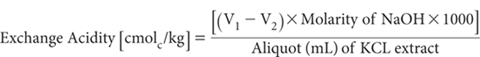
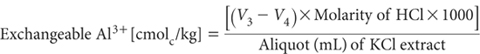

Unbuffered solutions of neutral salts may be used to measure exchangeable cations including the acidic cations, Al3+ and H+, termed exchange acidity (Black 1965). As the solutions are unbuffered, the extractions are considered to occur at or near the pH of the soil. The test is intended for use only on acidic soils; expect inconsequential values if used on neutral and alkaline soils.
Exchange acidity values obtained by this method are used to calculate the ECEC of neutral and acidic soils. In addition, the exchangeable Al3+ values are also involved in the calculation of the Al–saturation of the exchange complex of acidic soils.
In this method, soil is equilibrated with 1 M KCl for 1 h at ≈25°C at a soil/solution ratio of 1:10. The filtered extract is analysed for what is assumed to be Al3+ and exchange acidity (Yuan 1959), with H+ obtained by difference: i.e. Exch. Acidity – Al3+.
Figure 15.7. Soil exchangeable Al3+ by method 15G1 vs % robust CVs, restricted to soils with median 1:5 soil/water pH values ≤5.5 (n=24).
Measurement performance across-laboratories for Method 15G1 is available from interlaboratory proficiency programs of ASPAC from 1997–2007. How % robust CVs vary continuously with increasing concentrations of exchange acidity across samples with 1:5 soil/water pH values ≤5.5 are shown in Figure 15.7. The trend line is highly significant. The data were sourced from laboratories across Australasia that participated in ASPAC inter-laboratory proficiency programs (e.g. Peverill and Johnstone 1997; Rayment et al. 2007).
1 M Potassium Chloride
Dissolve 74.6 g potassium chloride (KCl) and make volume to 1 L with deionised water.
Phenolphthalein Indicator
As for Method 4D1. Concentration of this indicator solution may be increased to 1.0% w/v if preferred.
Sodium Hydroxide Solutions
45% Sodium Hydroxide Solution
As for Method 4D1.
Standard 0.02M Sodium Hydroxide
Dilute 1.0 mL 45% NaOH solution to 1 L with CO2-free deionised water. Avoid unnecessary contact of this solution with the atmosphere. Standardise against potassium hydrogen phthalate as follows:
Dissolve 4.0845 g of potassium hydrogen phthalate (KHC8H4O4, previously dried for 1 h at 110°C) in CO2-free deionised water and dilute to 1 L in a volumetric flask to give a 0.02 M solution. Pipette 25 mL of this standard solution into a flask, add 25 mL of water and titrate with the NaOH solution to the endpoint at pH 8.3–8.6, or as indicated by phenolphthalein.
For a 25 mL aliquot, molarity of NaOH = [0.02 × 25/titre (mL)]
If required, the molarity may be adjusted to a pre-determined concentration by diluting the NaOH solution according to the formula given in Method 4D1.
Hydrochloric Acid Working Solution (≈0.02 M)
Dilute 2 mL hydrochloric acid (HCl; 10 M) to 1 L with deionised water. Standardise against sodium tetraborate (Na2B4O7.10H2O) as described in Method 7A1.
4% Sodium Fluoride
Dissolve 4 g sodium fluoride (NaF; see Method 4D1 for reagent specifications) in 100 mL CO2-free deionised water. NaF solution is usually acidic, therefore adjust to pH 8.0 or to pink colour of phenolphthalein with 0.02 M NaOH.
Extraction
Weigh 8.0 g of air-dry soil (<2 mm) into a 100 mL plastic centrifuge tube. Add 80 mL 1 M KCl Extracting Solution, cap tubes securely, and shake end-over-end at ≈25°C for 1 h. Remove from shaker and, without delay, filter through two Whatman No. 2 filter papers. Discard the first 10 mL of filtrate and retain remainder for determination of exchangeable Al3+ and exchange acidity.
Analysis of Extract – Exchange Acidity
Flush air from a 100 mL tall-form, borosilicate beaker and fill with N2 gas. Pipette a 25 mL aliquot of the filtered soil extract into the beaker, add 25 mL deionised water and mix well. Titrate with 0.02 M NaOH to pH 8.0 using a pH meter, micro-burette and magnetic stirrer. Record titre (V1 mL). Also titrate a blank consisting of 25 mL 1 M KCl Extracting Solution and 25 mL deionised water and record titre (V2 mL).
Calculation and Reporting of Exchange Acidity

Report exchange acidity (cmolc/kg), expressed on an oven-dry basis. Use the air-dry moisture to oven-dry moisture ratio to convert to an oven-dry concentration. Refer to Method 2A1 for guidance with regard to this soil moisture calculation
Exchangeable Al3+ and Exchangeable H+
Proceed as for the exchange acidity titration. After titration to pH 8.0, add 5 mL of 4% NaF solution. If Al3+ is present, the pH will increase due to the formation of NaOH as shown by the next equation:
Al(OH)3 + 6NaF → Na3 AlF6 + 3NaOH
Allow to stand with gentle stirring for about 5 min, maintaining an atmosphere of N2 above the solution. Titrate with 0.02 M HCl to pH 8.0. Record titre (V3 mL).
Titrate the blank from exchange acidity titration after adding 5 mL of NaF solution (as above) and record titre (V4 mL); the blank should be positive but small.
Aluminium is regarded as being trivalent as indicated by the following equation:
Al3 + 3NaOH → Al(OH)3 + 3Na+
Calculation and Reporting of Exchangeable Al3+

Report exchangeable Al3+ (cmolc/kg), expressed on an oven-dry basis. Use the air-dry moisture to oven-dry moisture ratio to convert to an oven-dry concentration. Refer to Method 2A1 for guidance with regard to this soil moisture calculation.
Calculation and Reporting of Exchangeable H+
Exchangeable H+ [cmolc/kg] = [Exchangeacidity – Exchangeable Al3+]
Report exchangeable H+ (cmolc/kg), expressed on an oven-dry basis. Use the air-dry moisture to oven-dry moisture ratio to convert to an oven-dry concentration. Refer to Method 2A1 for guidance with regard to this soil moisture calculation